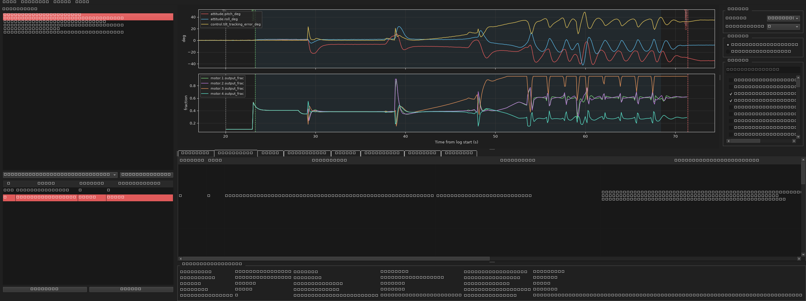
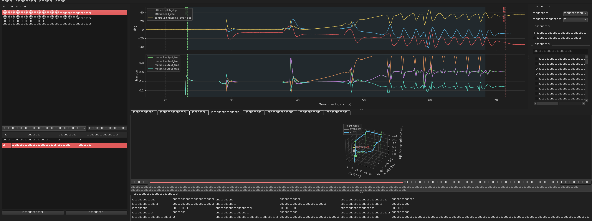

Usage guide¶
- Install
- Desktop application
- Command line
- Flight simulator
- Aircraft profiles
- Web UI and HTTP API
- Sharing analyses (.ant)
- Reports
- Investigating a crash: a worked example
- Tips and troubleshooting
Install¶
python -m venv .venv
.venv\Scripts\activate # Windows
source .venv/bin/activate # macOS / Linux
pip install -e ".[desktop]" # drop [desktop] for a headless/server install
Python 3.11 or newer is required. You can also download a standalone build from Releases, which needs no Python (see DEPLOYMENT).
Desktop application¶
anatele # empty window
anatele path/to/flight.tlog # import and analyse immediately

Layout¶
| Region | Contents |
|---|---|
| Menu | File (Open Log or Analysis Ctrl+O, Save Analysis As .ant Ctrl+S, Export Report Ctrl+E, Show Original File), Analysis (Re-analyse with the selected profile, Refresh F5), Tools (Profile Editor, Compare With Log, Aircraft Trends), Help (Limitations). |
| Left: Recordings | Each imported file shows its status and progress. Analysis runs in a separate worker process, so the window stays responsive. Failed files show the error. |
| Left: Profile | The profile you select is attached to the next import (or re-analysis). Profiles are immutable and versioned. |
| Left: Episodes | One row per armed episode, showing the phase status (airborne reported, airborne inferred, no airborne evidence, unassessable), takeoff time and crash-report time. Selecting an episode zooms the plots and replay to it. All shows the whole recording. |
| Centre: Plot | Selected signals stacked by unit. Dashed lines mark armed, takeoff, crash report and disarmed; the shaded band is the pre-event airborne window. Gaps longer than 5 s are not drawn through. Click a point to open that record in the Evidence tab. |
| Right: X Axis | Time from log start, or time from takeoff (for comparing flights). |
| Right: Y Axis | Every decoded or derived signal for the selected source. Use the filter box, e.g. vibration, motor., ekf. |
| Bottom tabs | Findings · Hypotheses · Rules · Flight Path · Events · Parameters · Missions · Evidence. Double-click any row to see its evidence. |
| Flight Statistics | Firmware and semantic pack, frame, record count, takeoff, airborne time, crash report, pre-event vibration, EKF compass ratio, tilt error, motor spread, battery monitoring and top hypothesis. |
Useful signals¶
| Signal | Meaning |
|---|---|
attitude.roll_deg, attitude.pitch_deg, attitude.yaw_deg |
Estimated attitude |
attitude.desired_roll_deg, attitude.desired_pitch_deg |
Controller target (NAV_CONTROLLER_OUTPUT, ATTITUDE_TARGET or ATT Des*) |
control.tilt_tracking_error_deg |
Angle between desired and estimated thrust vectors (derived) |
control.throttle_pct |
Throttle output (VFR_HUD or CTUN) |
output.chN |
Raw servo/ESC PWM |
motor.N.output_frac, motor.N.at_floor, motor.N.at_ceiling |
Motor command mapped via SERVOn_FUNCTION and normalised to the PWM range (derived) |
motor.mix.right_minus_left, front_minus_back, ccw_minus_cw |
Mixer decomposition of the motor commands (derived) |
imu.N.vibration.{x,y,z}, imu.N.clipping_counter |
Vibration and clipping |
ekf.compass_ratio, ekf.velocity_ratio, ekf.core*.… |
EKF innovation test ratios |
gps.fix_type, gps.h_acc_m |
GPS quality |
position.altitude_home, position.latitude, position.longitude |
Estimated position |
battery.voltage, battery.current |
Only when a monitor reports non-zero values |
Flight Path tab¶

- The 3D path shows the recorded estimated position in metres east/north/up, relative to the first fix of the episode.
- The path colour shows the flight mode (AUTO, RTL, LAND …). The grey line is the ground shadow.
- Waypoint colours: green = reported complete, yellow-green = within radius plus GPS accuracy, amber = completion not observed, red = not visited.
- X markers: takeoff, attitude excursion, crash report and disarmed.
- Play animates the aircraft; the red arms are the front. Drag with the mouse to rotate the view.
- Export GIF… saves an animation, or a still image if you choose
.png.
Comparing and trending¶
- Parameters tab → Compare against → Diff: typed differences against another log or the attached profile. Raw-only differences (unverified encoding) are listed separately.
- Tools → Compare With Log: metrics from the pre-event airborne window side by side, rule states and the parameter diff.
- Tools → Aircraft Trends: every analysed flight uploaded with a profile of that aircraft key, with a chart of vibration, compass ratio and motor spread over time.
Command line¶
anatele desktop app
anatele web [--port 8766] web UI on 127.0.0.1
anatele analyse LOG [--json] findings, hypotheses and rule summary in the terminal (LOG may be a .ant)
anatele export LOG [-o F.ant] [--include-original] analyse and save a shareable .ant
anatele replay LOG [--out x.gif|x.png] [--episode N] [--fps 12] [--seconds 12]
anatele simulate [--scenario NAME|all] [--out DIR|file.tlog] [--seed N] [--duration S]
Example:
$ anatele analyse simulations/sim_motor_failure.tlog
sim_motor_failure.tlog: 5,387 records, status complete
source 1:1 vehicle arducopter-4.7.2
episode 0: airborne_inferred, takeoff 23.3s, crash report 71.4s
Findings:
[critical] Crash-check disarm reported
[critical] Sustained attitude (tilt) tracking error before upset
[warning ] Motor command at ceiling before upset
[warning ] Motor output imbalance before event
...
Hypotheses for episode 0 (screening order, not probability):
1. Mechanical/thrust-generation or frame configuration problem — strong support
...
Flight simulator¶
anatele simulate --out simulations # all five scenarios
anatele simulate --scenario compass_interference --out compass.tlog --seed 7
| Scenario | What happens | What AnaTele should show |
|---|---|---|
nominal |
Arm, AUTO takeoff, 4 waypoints, RTL, land | No critical findings; all waypoints reported_complete |
motor_failure |
Motor 3's thrust degrades mid-mission until the controller saturates and the crash check disarms | Tracking loss, motor ceiling and imbalance, thrust hypothesis ranked first; later waypoints not visited |
compass_interference |
Motor current corrupts the magnetometer, causing yaw error, toilet-bowling during RTL and a compass switch | EKF compass ratio above 1 pre-event, compass-selection event, circling path in the replay |
vibration |
Damaged propeller | Sustained vibration above 30 m/s², clipping increments before the event |
radio_failsafe |
PreArm radio warnings, then RC loss mid-mission and RTL | PreArm radio finding, RTL mode change, waypoints after the loss not visited |
The physics is deliberately simple: a rigid quad, an ArduPilot-style roll/pitch-over-yaw mixer priority, linear drag
and wind. Output is labelled SIMULATED FLIGHT inside the log and is located at the public SITL default field.
Use it to learn the tool, test rules and reproduce patterns. It does not prove anything about a real aircraft.
Aircraft profiles¶
Tools → Profile Editor (or POST /api/profiles):
| Field | Use |
|---|---|
| Aircraft key | Stable id such as quad-01. Saving again creates version 2, 3, … |
| Name, frame, firmware, notes | Operator declarations, shown in reports. They are not verified against the binary. |
| Vibration screening | Threshold used by the vibration rules (default 30 m/s²) |
| Expected parameters | NAME=value per line. Checked by profile-parameter-mismatch and the parameter diff. |
Attach the profile before importing. Existing analyses are never rewritten; use Analysis → Re-analyse.
Web UI and HTTP API¶
anatele web # http://127.0.0.1:8766
The web UI has the same analysis with a simpler layout. OpenAPI docs are at /docs. Main endpoints:
POST /api/logs multipart file (+ profile_id)
POST /api/analyses multipart .ant file (opens a shared analysis)
GET /api/logs | /api/logs/{id}
GET /api/logs/{id}/events?search=&severity=&collapse=
GET /api/logs/{id}/rules?state=triggered
GET /api/logs/{id}/parameters?search=
GET /api/logs/{id}/parameter-diff?against_log=ID | against_profile=ID
GET /api/logs/{id}/series?source=1:1&signal=imu.0.vibration.z
GET /api/logs/{id}/positions?source=1:1
GET /api/logs/{id}/records/{record_id} decoded record + raw bytes
GET /api/logs/{id}/report printable HTML
GET /api/logs/{id}/original
GET /api/logs/{id}/export.ant?include_original=false
GET /api/compare?left=ID&right=ID
GET /api/drones/{drone_key}/trends
POST /api/profiles | GET /api/profiles
Reports¶
File → Export Report (or /api/logs/{id}/report) writes a self-contained HTML file with the file hash,
engine/rule/semantic versions, phases, ranked hypotheses, findings with evidence ids, the full rule-coverage
table, mission item statuses and limitations. Print it to PDF from a browser.
Sharing analyses (.ant)¶
An .ant file (ANalysed Telemetry) is a finished AnaTele analysis that someone else can open without
re-running anything: findings, ranked hypotheses, rule coverage, phases, missions, flight statistics, every
plot and the 3D flight path.
| How | Save | Open |
|---|---|---|
| Desktop | File → Save Analysis As (.ant) Ctrl+S |
File → Open Ctrl+O, or anatele shared.ant |
| Web | Save analysis (.ant) link above the results | Choose the .ant in the upload box |
| CLI | anatele export LOG -o flight.ant |
anatele analyse flight.ant |
When saving you choose:
- Analysis only (default): smaller. The recipient sees decoded records but not raw bytes, and cannot re-analyse.
- Include original log: embeds the untouched log so the recipient can view raw bytes and re-analyse with a newer engine or their own profile.
Both contain GPS positions and timestamps of the flight. Share only with people you trust.
What's inside. An .ant is a ZIP container (like .docx), so unzip -l flight.ant works:
| Entry | Contents |
|---|---|
mimetype |
application/vnd.anatele.analysis+zip (first, uncompressed) |
meta.json |
Format version, AnaTele/engine/rule-pack versions, original filename/size/SHA-256, profile snapshot, SHA-256 of every entry |
manifest.json |
The full analysis result |
observations.parquet, signals.parquet |
Decoded records and normalised signals |
report.html |
The printable report, readable without AnaTele |
original.tlog / .bin / .log / .csv |
Only with Include original log |
Safety. Opening an .ant never runs analysis or code from the file. AnaTele accepts only the entries above,
caps sizes while extracting (1 GiB file, 768 MiB per Parquet, 100 MiB original), rejects encrypted entries, and
verifies every SHA-256 and the Parquet schema before registering it. Altered or damaged files are refused.
Hashes prove the content is internally consistent, not who made it. An imported analysis shows shared analysis
from … in the report and status line, and keeps the engine version it was produced with.
Investigating a crash: a worked example¶
- Import the log with the aircraft's profile attached.
- Check Flight Statistics: was the firmware matched? Is battery monitoring present? Was takeoff reported or inferred?
- In Episodes, select the crash episode. Plot roll, pitch and
control.tilt_tracking_error_deg. When did tracking first diverge, relative to the shaded pre-event window? - Add
motor.*.output_frac. Did one motor go to ceiling or floor first? Is the imbalance mostly in yaw (motor.mix.ccw_minus_cw)? - Add
ekf.compass_ratioandimu.0.vibration.z. Were they elevated before the upset, or only at impact? - Read Hypotheses. Each one lists its supporting and contradicting rules and the observation that would separate it from the others.
- Open Flight Path to see where the upset began relative to the mission, and which waypoints were reached.
- Export the report. Follow up with the onboard
.binlog and a safe, props-off inspection; don't fly another Auto mission.
Tips and troubleshooting¶
| Symptom | Explanation |
|---|---|
airborne inferred instead of reported |
The capture has no EXTENDED_SYS_STATE. Takeoff was inferred from altitude rise with demand. |
Many rules unassessable |
The needed messages weren't streamed or recorded, or the sample rate is too low for the persistence criterion. Use the onboard .bin log. |
Parameters shown as raw … (unverified) |
The integer encoding couldn't be confirmed (non-ArduPilot autopilot, or capabilities missing). |
Power-related causes cannot be assessed |
SYS_STATUS reported 0 V, meaning no battery monitor is configured. |
| Older analyses lack phases and rules | They were made with an earlier engine. Use Analysis → Re-analyse. |
| Analysis stopped after 180 s | The file is too large for the local deadline. Split it, or raise TIMEOUT_SECONDS in worker.py. |
| Where is my data? | See DEPLOYMENT → Data directory. |